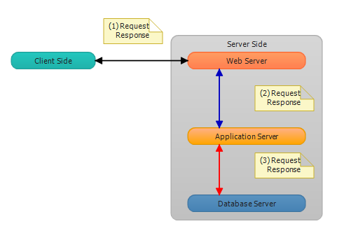
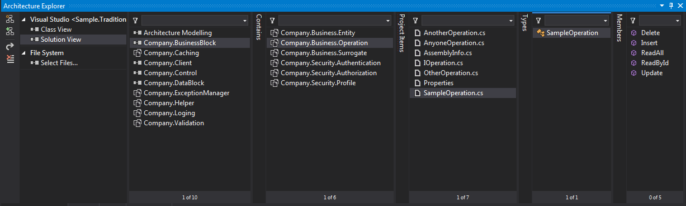

Traditional N-tier Architecture Application
Introduction
This project provider enterprise project template who want to do advanced and enterprise level projects.İt is sample n-tier .net application template.
Diagrams
Diagram 0 : Servers (Web Server , Application Server , Database Server)

Diagram 1 : Base Logical Layers (Presentation Layer , Business Layer , Data Access Layer , Cross-Cutting Layer )

Diagram 3 : More details -view of whole project

Diagram 4 : View in architecture explorer of project

Description
- Physical tiers of project is web server , application server , database server (namely servers)
- Logical layers of project is too much.I'll list up for all of them
Presentation Layer
Company.Web
Company.Mobile
Company.Windows
Company.RIA
Company.UI.Control
Company.UI.Control.Mobile
Company.UI.Control.Web
Company.UI.Control.Windows
Business Layer
Company.Business.Entity
Company.Business.Operation
Company.Business.Surrogate
Company.Security.Authentication
Company.Security.Authorization
Company.Security.Profile
Data Access Layer
Cross-Cutting Layer
Company.Caching
Company.ExceptionManager
Company.Helper
Company.Loging
Company.Validation
More Information
get clone using VisualStudio 2012 with git source control in the bitbucket repository.You can see repository address and git address in the below
Repository : http://code.msdn.microsoft.com/Traditional-N-tier-80f841c2/https://github.com/yemrekeskin/TraditionalLayeredArchitecture
Git : http://code.msdn.microsoft.com/Traditional-N-tier-80f841c2/https://github.com/yemrekeskin/TraditionalLayeredArchitecture.git